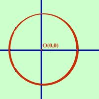

|
In tal caso a = 0 e b = 0 e l'equazione della circonferenza diventa x2+ y2 +c = 0 La prima cosa che si puo' dire e' che c deve essere negativo altrimenti l'equazione non puo' rappresentare una circonferenza (terza condizione): infatti: x2+ y2 = -c e -c come somma di due quadrati deve essere positivo In questo caso si preferisce scrivere l'equazione come: x2+ y2 = r2 E' l'equazione di centro l'origine O(0,0) e raggio r Infatti a=0 significa centro sull'asse y e contemporaneamente b=0 significa centro sull'asse x quindi il centro e' nel punto O(0,0) comune sia ad x che ad y Esempio, considero la circonferenza:  x2+ y2 = 25 il centro vale xo = -a/2 = 0 yo = -b/2 = 0 ed il raggio vale r = = E' la circonferenza di centro O(0,0) e raggio 5 |